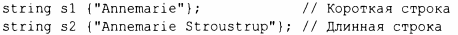
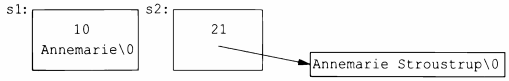
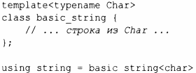
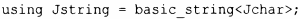

⇐9.2 Строки 9.3 Представления строк⇒
Реализация строкового класса является популярным и полезным упражнением. Однако для общего использования наши тщательно продуманные первые попытки редко соответствуют стандартной строке s tring в удобстве или производительности. В наши дни строка обычно реализуется с использованием опти'11изации коротких строк, т.е. короткие строковые значения сохраняются в самом объекте string, и только более длинные строки размещаются в свободной памяти. Рассмотрим следующий пример:
Схема размещения в памяти может выглядеть следующим образом:
Когда значение строки изменяется от короткой до длинной строки (и наоборот), ее представление настраивается соответствующим образом. Сколько символов может содержать "короткая" строка? Это зависит от конкретной реализации, но "около 14 символов" - это неплохое предположение.
Фактическая производительность string может зависеть от среды времени выполнения. В частности, в многопоточных реализациях распределение памяти может быть относительно дорогостоящим. Кроме того, когда используется большое количество строк различной длины, может произойти фрагментация памяти. Это основные причины, по которым оптимизация коротких строк стала вездесущей.
Для работы с разными наборами символов string на самом деле представляет собой псевдоним общего шаблона basic_string с символьным типом char:
Пользователь может определить строку для произвольного типа символов. Например, в предположении, что существует тип японских символов Jchar, можно написать
После этого со строками японских символов Jstring можно выполнять все те же операции, что и с обычными строками.